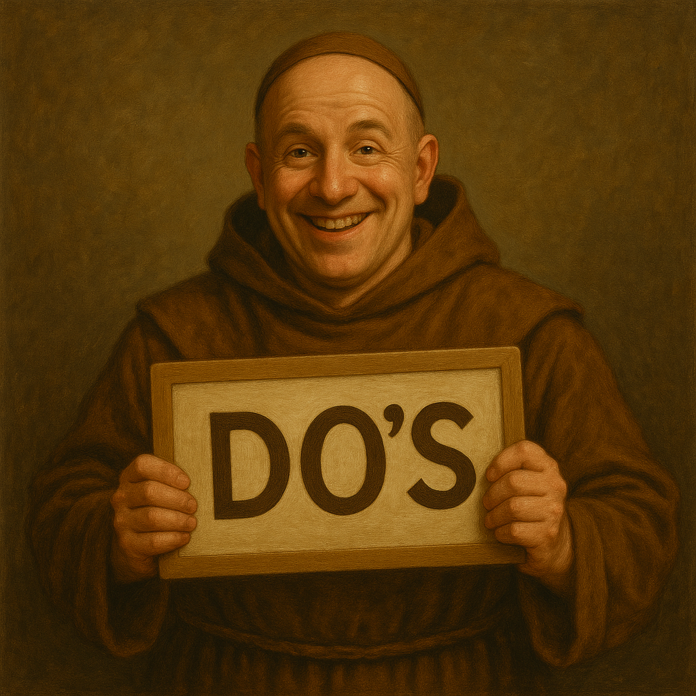
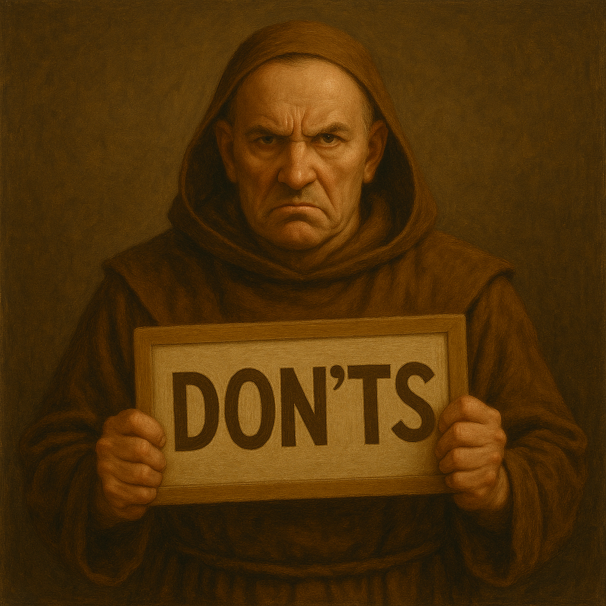

Do’s & Don’ts
Om onze LAN-party leuk, veilig en aangenaam te houden voor iedereen, hebben we een aantal eenvoudige afspraken. Hieronder vind je een overzicht van wat we graag zien gebeuren – en wat beter niet.

- Installeer je op je toegewezen plek en houd je materiaal ordelijk.
- Respecteer je medespelers en de crew. Fair play en goede sfeer zijn belangrijker dan winnen.
- Neem geregeld pauze, drink voldoende water en eet iets. Gezondheid eerst!
- Gebruik de vuilbakken en houd de zaal netjes.
- Vergrendel je computer als je even weg bent.
- Volg altijd de veiligheidsinstructies van de crew.
- Er zijn leuke verrassingen voor wie verkleed is in thema van de LAN-party.
- Have fun!

- Geen eigen netwerkapparatuur aansluiten (switches, routers, access points …).
- Gebruik geen (verleng)kabels die onveilig of beschadigd zijn.
- Geen storend lawaai, muziek of gedrag dat anderen hindert.
- Neem geen luidsprekers mee.
- Niet roken binnen de zaal.
- Geen eigen frietpotten, magnetrons of andere kooktoestellen meebrengen.
- Laat je spullen niet onbeheerd achter; wij zijn niet verantwoordelijk voor verlies of diefstal.
- Gebruik nooduitgangen alleen bij noodsituaties.
- Geen piraterij of illegaal downloaden.
- Drugs en pornografisch materiaal tijdens het event zijn ten strengste verboden.
Bij problemen
Heb je een vraag, probleem of iets opgemerkt dat niet in orde is? Spreek altijd iemand van de crew aan. Samen zorgen we ervoor dat het evenement vlot en veilig verloopt.